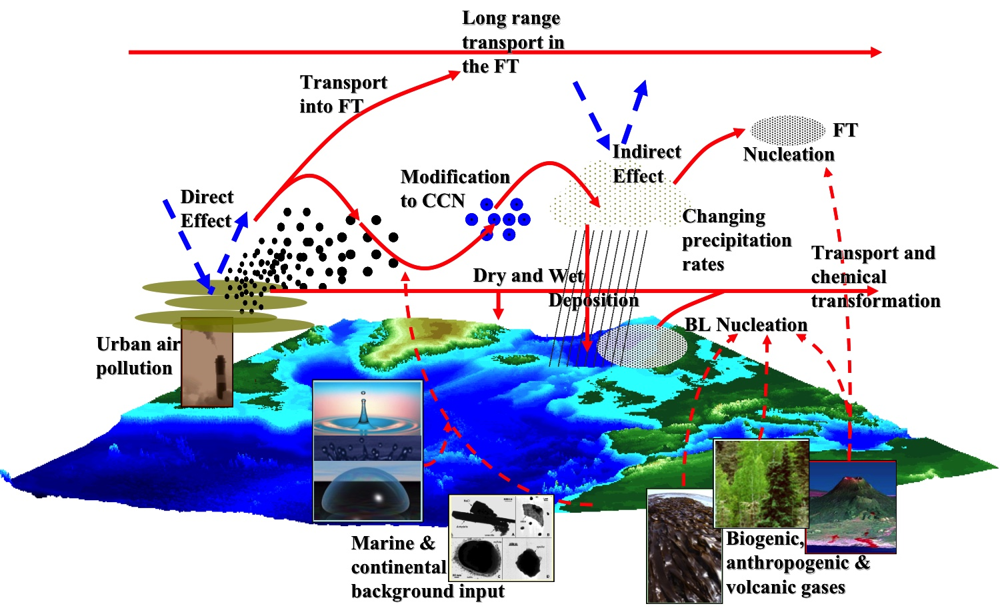
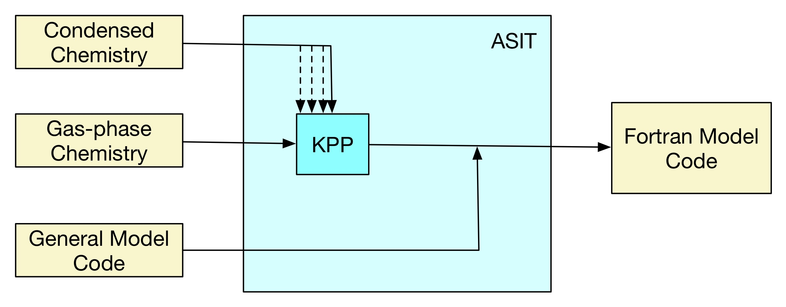
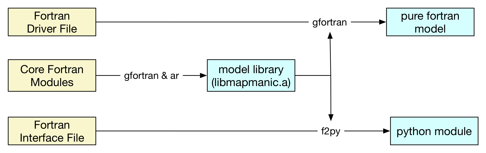
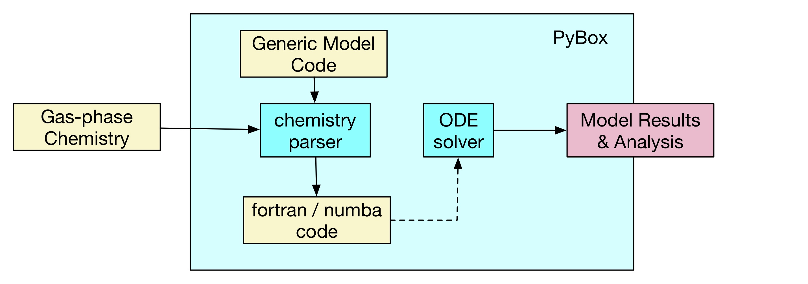

Atmospheric Models using Fortran and Python
Douglas Lowe (University of Manchester)
talk slides: https://douglowe.github.io/slides/01-pythonNW-f2py/
Environment Setup (python 3)
conda config --add channels conda-forge
conda config --add channels openbabel
conda config --add channels chria
conda create --name climlab climlab jupyter matplotlib
conda create --name pybox numpy scipy matplotlib assimulo numba openbabel pandas openmp gcc gfortran_osx-64
conda create --name manic numpy scipy matplotlib pandas gfortran_osx-64
git clone https://github.com/brian-rose/climlab
git clone https://github.com/loftytopping/PyBox.git
git clone https://github.com/douglowe/f2py-manic-demo.git
talk slides: https://douglowe.github.io/slides/01-pythonNW-f2py/
Atmospheric Composition
(specifically air pollution)
(from all sources)

$${d[Atmosphere] \over d[Time]} = \sum[Processes]$$
(aerosol: suspension of particles in a gas)
process and (0-D) box modelling
regional AQ modelling
Language Choice
- sociological reasons
- maths focus, and data structures
- speed and parallelisation
Why Fortran?
Language Choice
- Flexibility, and data structures
- Text processing!
- So many packages
Why Python?
Solution: use both with f2py
But numba!
- Not compatible with pandas data structures
- Still requires some special coding considerations
numba does provide a much needed speed boost to python code.
However:
Confession time:
I don't actually use python and f2py for my everyday work...
Example Atmospheric Models
- Climate modelling: climlab
- Aerosol chemistry box model: MANIC
- Gas chemistry box model: PyBox
(Brian E. J. Rose, University at Albany, USA)
(Douglas Lowe, University of Manchester)
(David Topping, University of Manchester)
Basic f2py Usage
simple usage case from https://docs.scipy.org/doc/numpy/f2py/getting-started.html
Fortran 77 code
SUBROUTINE FIB(A,N)
C CALCULATE FIRST N FIBONACCI NUMBERS
INTEGER N
REAL*8 A(N)
DO I=1,N
IF (I.EQ.1) THEN
A(I) = 0.0D0
ELSEIF (I.EQ.2) THEN
A(I) = 1.0D0
ELSE
A(I) = A(I-1) + A(I-2)
ENDIF
ENDDO
END
Quick Compile & Import
f2py -c fib1.f -m fib1
>>> import numpy
>>> import fib1
>>> print fib1.fib.__doc__
fib - Function signature:
fib(a,[n])
Required arguments:
a : input rank-1 array('d') with bounds (n)
Optional arguments:
n := len(a) input int
Note the optional argument defined by f2py; in pure fortran both arguments would be required
Quick Usage
>>> a = numpy.zeros(8,'d')
>>> fib1.fib(a)
>>> print a
[ 0. 1. 1. 2. 3. 5. 8. 13.]
predefined numpy array is returned with fibonnaci series
Quick Problems
>>> a1 = numpy.zeros(8,'d')
>>> fib1.fib(a1,6)
>>> print a1
[ 0. 1. 1. 2. 3. 5. 0. 0.]
>>> fib1.fib(a,10)
fib:n=10
Traceback (most recent call last):
File "<stdin>", line 1, in ?
fib.error: (len(a)>=n) failed for 1st keyword n
>>>
Allowing users to define 'n' themselves leads to problems when it doesn't match the array size
climlab
Created by Brian E. J. Rose (University at Albany, USA)
"climlab is a flexible engine for process-orientated climate modelling"
Radiative Transfer Models

(from IPCC)
Installation Instructions
conda config --add channels conda-forge
conda create --name climlab climlab jupyter matplotlib
git clone https://github.com/brian-rose/climlab
Examples
Radiative-Convective Equilibrium with CAM3 Scheme
jupyter notebook courseware/RCE\ with\ CAM3\ radiation.ipynb
f2py - signature files
Three modules in climlab/radiation/cam3/ are readable by python, defined by:
f2py src/shr_kind_mod.F90 src/absems.F90 Driver.f90 -m _cam3 -h _cam3.pyf
Interfaces stored in climlab/radiation/cam3/_cam3.pyf
f2py - compilation
utilities in numpy.distutils.core are used for building the modules
compiler options and input files are defined in cam3_gen_source in climlab/radiation/cam3/setup.py, read during the compilation process.
controlling interfaces with f2py
Continuing usage case from https://docs.scipy.org/doc/numpy/f2py/getting-started.html
First solution - signature files
- create signature file
f2py fib1.f -m fib2 -h fib1.pyf
f2py -c fib2.pyf fib1.f
! auto-generated signature file
python module fib2 ! in
interface ! in :fib2
subroutine fib(a,n) ! in :fib2:fib1.f
real*8 dimension(n) :: a
integer optional,check(len(a)>=n),depend(a) :: n=len(a)
end subroutine fib
end interface
end python module fib2
! modified file, specifying variable intents
python module fib2
interface
subroutine fib(a,n)
real*8 dimension(n),intent(out),depend(n) :: a
integer intent(in) :: n
end subroutine fib
end interface
end python module fib2
Better solution - add f2py headers to code
SUBROUTINE FIB(A,N)
INTEGER N
REAL*8 A(N)
Cf2py intent(in) n
Cf2py intent(out) a
Cf2py depend(n) a
DO I=1,N
IF (I.EQ.1) THEN
A(I) = 0.0D0
ELSEIF (I.EQ.2) THEN
A(I) = 1.0D0
ELSE
A(I) = A(I-1) + A(I-2)
ENDIF
ENDDO
END
Improved python function
>>> import fib3
>>> print fib3.fib.__doc__
fib - Function signature:
a = fib(n)
Required arguments:
n : input int
Return objects:
a : rank-1 array('d') with bounds (n)
>>> print fib3.fib(8)
[ 0. 1. 1. 2. 3. 5. 8. 13.]
MANIC
Created by Douglas Lowe
Mixed-phase chemical box model. KPP used to generate fortran code from human-readable files. gfortran compiled, with f2py interface.
Basic KPP / ASIT workflow
Halogen Chemistry
Installation Instructions
conda create --name manic numpy scipy matplotlib pandas gfortran_osx-64
git clone https://github.com/douglowe/f2py-manic-demo.git
source activate manic
cd library_files/MANIC_SourceCode/
make all
cd library_files/MANIC_Python_Interface/
make all
(paths all relative to MANIC root directory)
Module Setup Steps
(this method worked well for me - however your mileage may vary)
(off-topic note)
The MakeFiles used for this example I wrote after working through the Software Carpentry Automation and Make course
Following this, self documentation has been included in the files. For command options for each Makefile use:
make help
Examples
Pure fortran code
export DYLD_LIBRARY_PATH=/Users/mbessdl2/anaconda3/envs/pybox/lib/
cd fortran_model_run_dir/
../library_files/MANIC_SourceCode/MAP.exe
Mixed python/fortran code
unset DYLD_LIBRARY_PATH
cd python_model_run_dir/
jupyter notebook manic_test.ipynb
f2py declarations
MANIC_Python.f90:
!f2py integer, intent(in) :: N_P_SPEC
!f2py real(kind=dp_alt), intent(in, out), depend(N_P_SPEC) :: C_P(N_P_SPEC)
Data type and intent usually not really needed, however dependencies are
MANIC_Monitor.f90:
CHARACTER(LEN=20), PARAMETER, DIMENSION(246) :: SPC_NAMES = (/&
SPC_NAMES_0, SPC_NAMES_1, SPC_NAMES_2 /)
!f2py character*20 :: spc_names(246)
In this case, the data type declaration was very important!
2-stage compilation issues
necessary duplication in MANIC_Python.f90 of parameter from MANIC_Parameters.f90:
! KPP DP - Double precision kind
INTEGER, PARAMETER :: dp_alt = SELECTED_REAL_KIND(14,300)
In climlab the parameter module (src/shr_kind_mod.F90) is explicitly passed to f2py to avoid this issue.
python variables for f2py
Initialise arrays with a memory order that is fortran compatible:
c_p = np.zeros(n_p_spec,order='F')
uedge_p = np.array([[-9e-1,1.2e0],[-1.2e0,2.4e0]],order='F')
This is essential for multi-dimension arrays
Remember the offset in array indexing!
c_p[MAPP.map_parameters.ind_o3-1] = 20.0e3*cfactor_p
PyBox
Created by David Topping
"PyBox is a Python based box-model generator and simulator designed for atmospheric chemistry and aerosol studies"
Python-based preprocessors generate fortran code from human-readable input files. f2py is used to generate python modules from this code.
Pybox workflow schematic
Master Chemical Mechanism (MCM)
Designed to explicitly model tropospheric ozone formation, from degradation of 143 primary volatile organic compounds (VOCs)

(from MCM website)
Available Schemes
Full MCM scheme contains over 5000 chemical compounds, and over 16,000 reactions. Two subsets of the full scheme are available in PyBox:
APINENE scheme has 305 chemical compounds, and 836 reactions.
BCARY scheme has 590 chemical compounds, and 1601 reactions.
Installation Instructions
conda config --add channels chria
conda config --add channels openbabel
conda create --name pybox numpy scipy matplotlib assimulo numba openbabel pandas openmp gcc gfortran_osx-64
git clone https://github.com/loftytopping/PyBox.git
Edit ODE_solver.py f2py/ODE_solver.py - to remove RodasODE import instruction
from assimulo.solvers import RodasODE, CVode
Side Note: assimulo package also uses f2py (and cpython)
"Assimulo is a simulation package for solving ordinary differential equations. It is written in the high-level programming language Python and combines a variety of different solvers written in FORTRAN, C and even Python via a common high-level interface"
Examples
numba based model:
cd ~/PyBox
python Gas_simulation.py
f2py based model:
cd ~/PyBox/f2py
python Gas_simulation_f2py.py
Sample Code
Human Readable (mechanism_files/MCM_APINENE.eqn.txt):
{1.} APINENE + NO3 = NAPINAO2 : 1.2D-12*EXP(490/TEMP)*0.65 ;
{2.} APINENE + NO3 = NAPINBO2 : 1.2D-12*EXP(490/TEMP)*0.35 ;
Fortran (f2py/Rate_coefficients.f90):
rate_values(1) =1.2E-12*EXP(490/TEMP)*0.65
rate_values(2) =1.2E-12*EXP(490/TEMP)*0.35
Python (Rate_coefficients_numba.py):
rate_values[0] =1.2E-12*numba_exp(490/TEMP)*0.65
rate_values[1] =1.2E-12*numba_exp(490/TEMP)*0.35
Notes
Both models need to compile numba or f2py code. Once code is compiled it can be reused, set "files_exist=True" (instead of False) in Gas_simulation[_f2py].py
f2py model seems to be roughly x1.6 faster than the numba model
Multithreading
Guide on how to check multithread capabilities available on stackoverflow
Create source file OTmod.f90:
module OTmod
!$ use omp_lib
implicit none
public :: get_threads
contains
function get_threads() result(nt)
integer :: nt
nt = 0
!$ nt = omp_get_max_threads()
end function get_threads
end module OTmod
switch to pybox environment, and compile:
root activate pybox
f2py -m OTfor --fcompiler=gfortran --f90flags='-fopenmp' -lgomp -c OTmod.f90
set number of OMP threads (or leave out, to use system default):
export OMP_NUM_THREADS=3
test in python:
> python
>>> from OTfor import otmod
>>> otmod.get_threads()
3